צילומי עמודי המקור ממשרד החינוך: 34–38, 48, 50–51, 88–89 ו־91. הצילומים נשמרו ללא שינוי, כולל הכתיב, השאלות והשרטוטים. אין עליהם לוגו או קרדיט של מחבר חדש. חלק מהעמודים כוללים גם טקסט לימודי סמוך לשאלות.
למסמך המלא: עדכון גאומטריה ז׳ — משרד החינוך. לדפי המקור שהוגדרו במאגר מוצג העותק המקורי ולא ניסוח משוחזר.
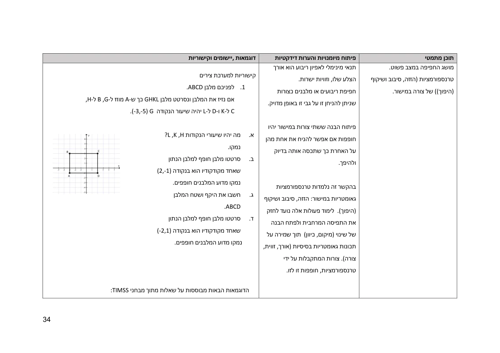
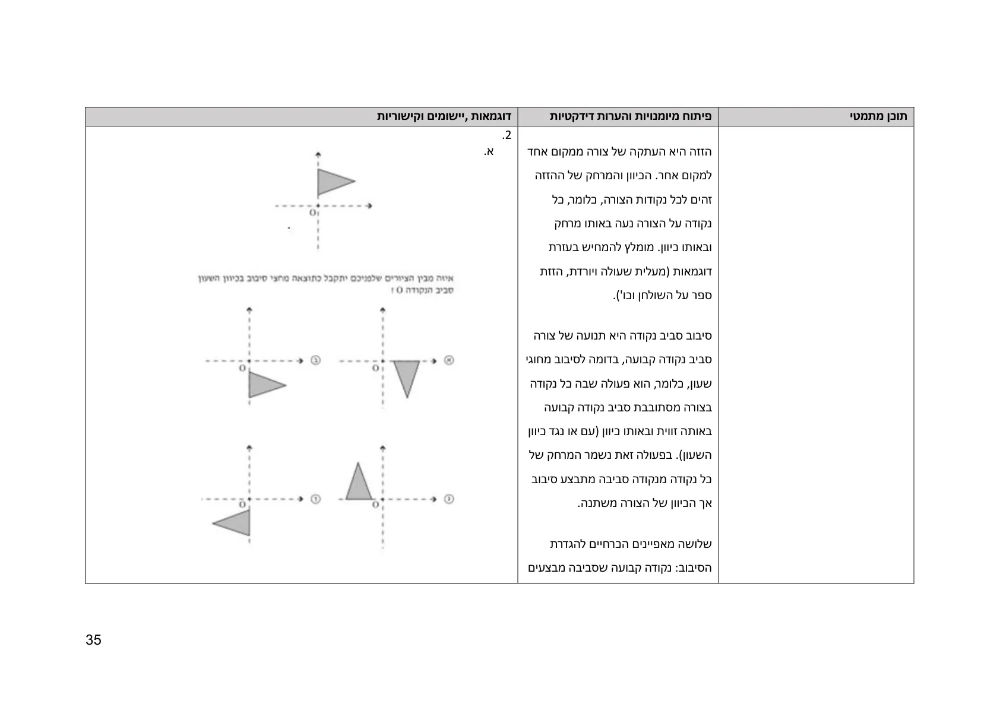
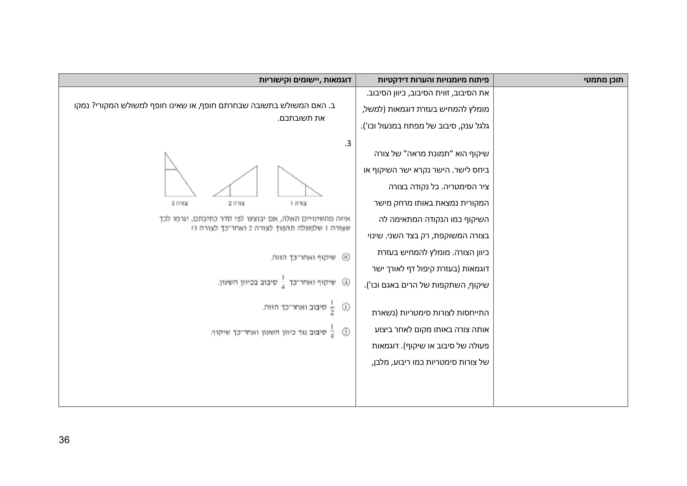
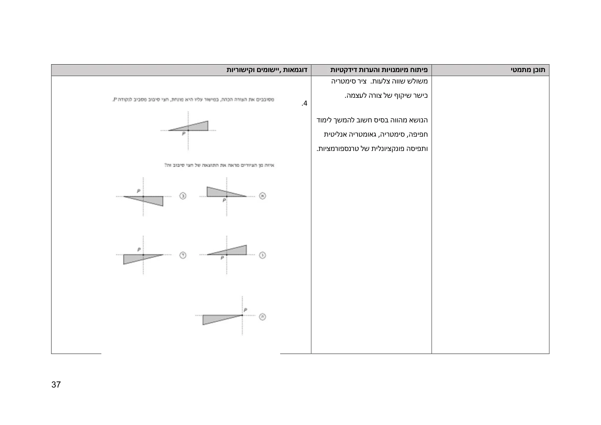
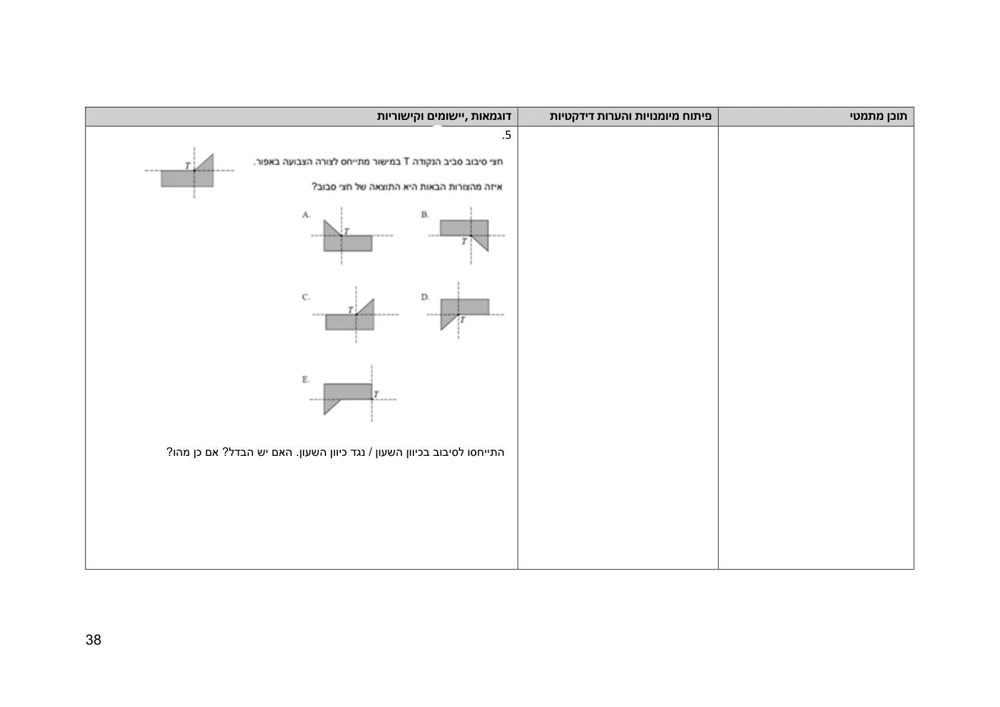
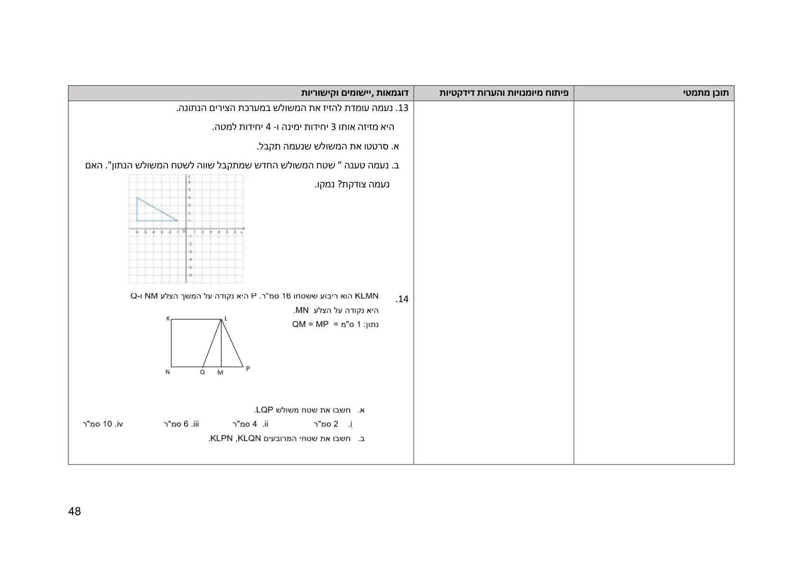
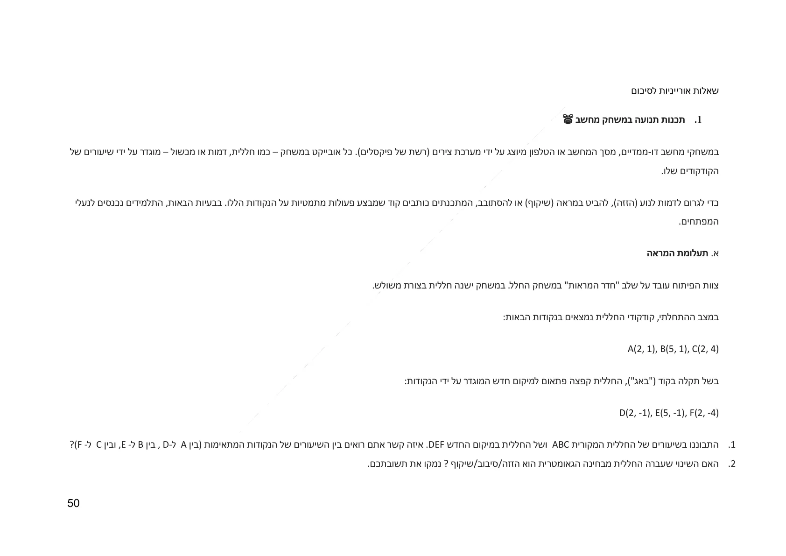
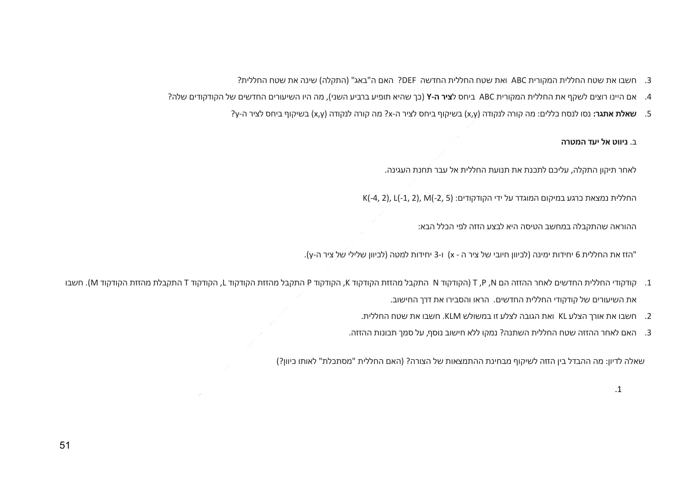
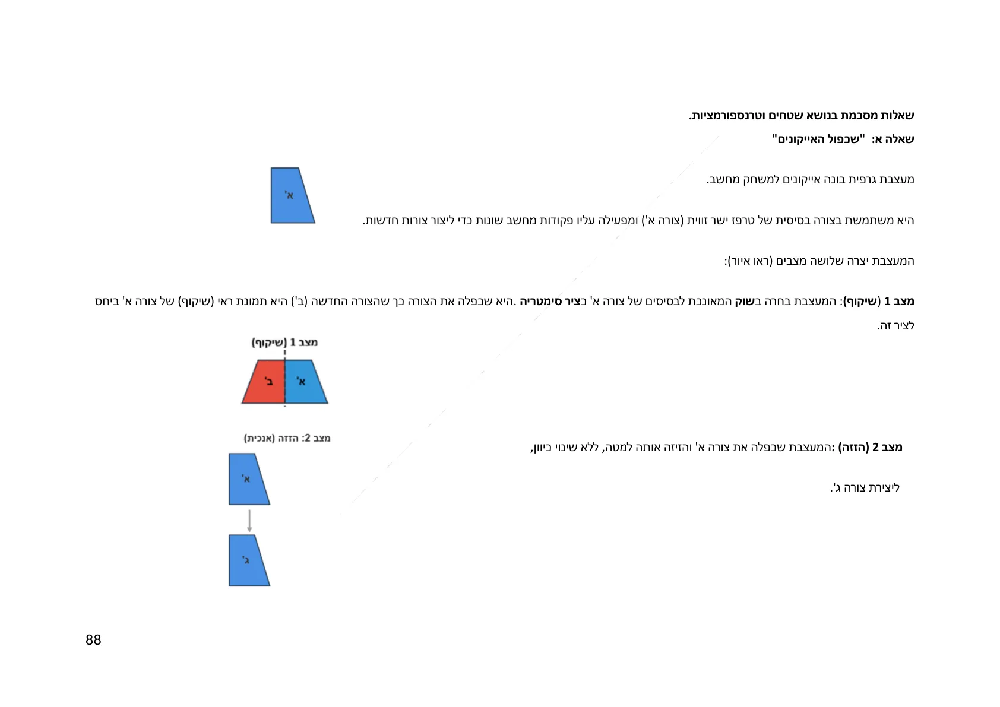
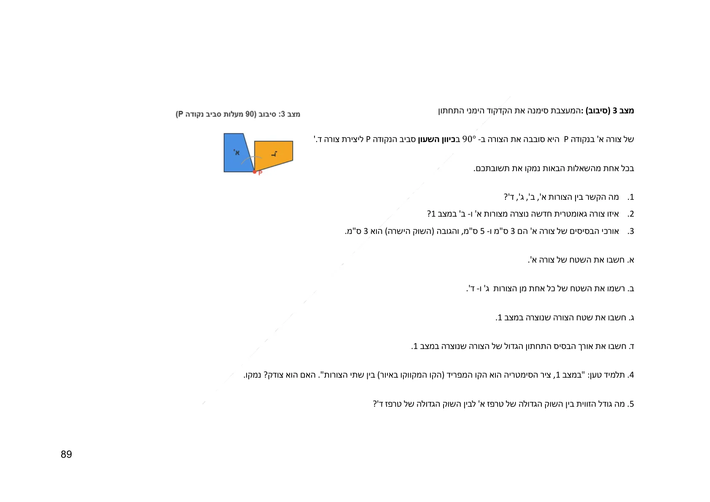
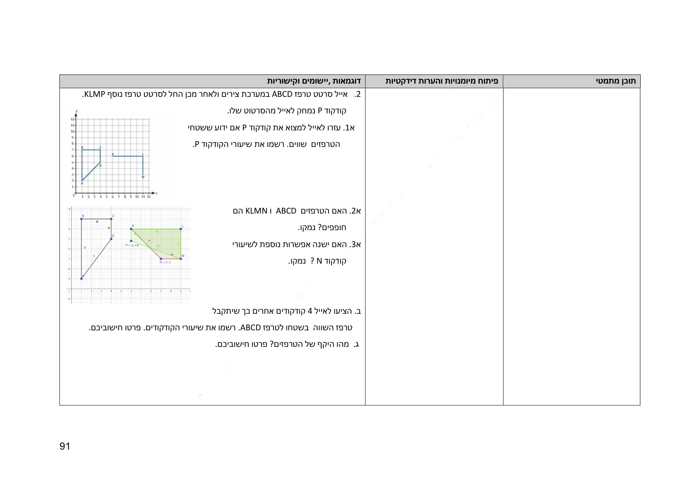